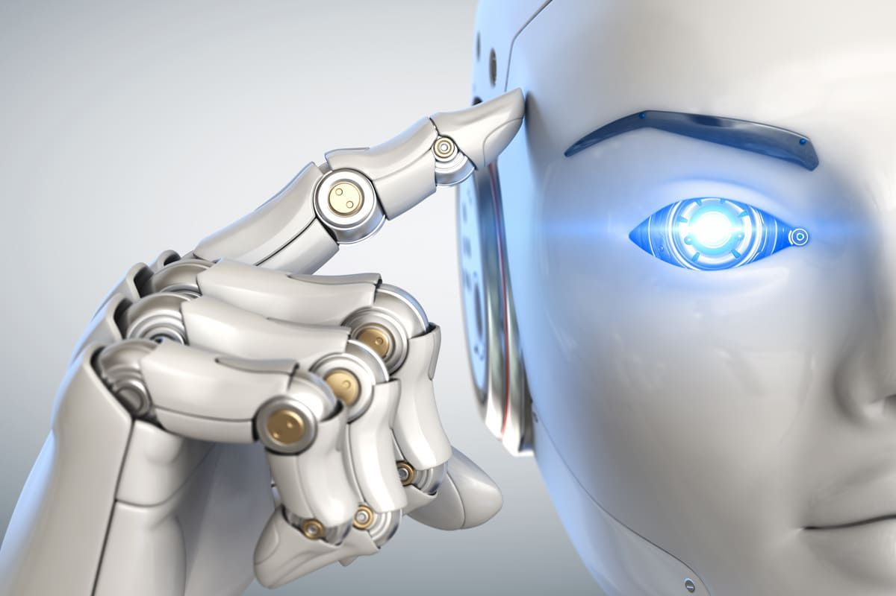

A inteligência artificial (IA) está se tornando uma parte cada vez mais importante da indústria moderna. Ela traz consigo uma série de benefícios e inovações que podem transformar a maneira como realizamos o trabalho. Neste artigo, exploraremos os quatro principais tipos de inteligência artificial na indústria e como eles estão revolucionando o setor.
O aprendizado de máquina é um dos principais ramos da inteligência artificial e tem sido amplamente utilizado na indústria. Ele envolve o desenvolvimento de algoritmos que permitem que as máquinas aprendam com dados e melhorem seu desempenho ao longo do tempo. Com o aprendizado de máquina, as máquinas podem automatizar tarefas complexas, detectar padrões e tomar decisões com base nos dados disponíveis.
Processamento de linguagem natural é outra área importante da inteligência artificial. Ele concentra-se em permitir que as máquinas entendam e processem a linguagem humana de forma eficaz. Com essa tecnologia, os sistemas podem interpretar e responder a comandos de voz, traduzir idiomas automaticamente e até mesmo gerar texto de forma autônoma.
A visão computacional é um campo da inteligência artificial que permite que as máquinas “vejam” e interpretem imagens ou vídeos. Por meio de algoritmos avançados, as máquinas podem reconhecer objetos, pessoas e até mesmo emoções em imagens. Essa tecnologia tem aplicações vastas na indústria, incluindo a automação de processos de inspeção e controle de qualidade.
A robótica inteligente combina a inteligência artificial com a robótica para criar máquinas autônomas que podem interagir e realizar tarefas sem a necessidade de intervenção humana constante. Os robôs inteligentes podem ser programados para executar várias funções, desde tarefas industriais complexas até assistência em atividades diárias. Essa área está em constante evolução e promete um futuro com robôs cada vez mais avançados. Esses são apenas alguns exemplos dos tipos de inteligência artificial que estão revolucionando a indústria. Com suas capacidades avançadas, essas tecnologias têm o potencial de melhorar a eficiência, a qualidade e a segurança nos processos industriais. No entanto, também é importante abordar os desafios éticos e sociais que acompanham a implementação da inteligência artificial.
